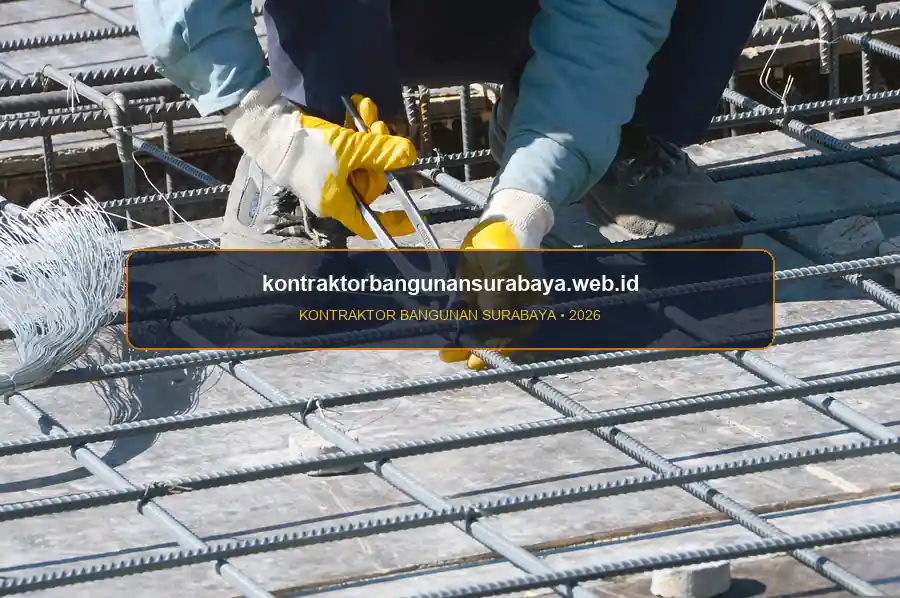

1. Apa Saja Jenis Besi Tulangan yang Digunakan untuk Struktur Rumah?
Jenis besi tulangan yang umum digunakan untuk struktur rumah tinggal meliputi besi ulir (deform) untuk elemen struktural utama seperti kolom dan balok, serta wiremesh untuk elemen pelat lantai atau dak dengan beban yang relatif ringan.
Pemilihan jenis dan diameter besi yang tepat, sesuai perhitungan struktur dari kontraktorbangunansurabaya.web.id, memengaruhi kekuatan dan keawetan bangunan dalam jangka panjang dalam menahan beban mati, beban hidup, hingga guncangan gempa bumi pada proyek bangun rumah baru di Surabaya.
Prinsip Kerja Beton Bertulang
Beton memiliki sifat sangat kuat menahan gaya tekan namun lemah terhadap gaya tarik. Sebaliknya, besi tulangan baja memiliki kekuatan tarik yang sangat tinggi, sehingga kombinasi keduanya membentuk struktur beton bertulang yang kokoh dan elastis terhadap deformasi.
2. Perbedaan Besi Ulir (Deform) dan Besi Polos untuk Struktur
Besi ulir memiliki permukaan bergerigi yang meningkatkan daya lekat (bonding) dengan beton di sekitarnya, sehingga lebih umum digunakan pada elemen struktural utama seperti kolom, balok, dan sloof yang menahan beban signifikan, dibanding besi polos yang permukaannya halus dan daya lekatnya terhadap beton lebih rendah.
Besi polos saat ini lebih banyak digunakan untuk elemen pendukung seperti sengkang atau begel, yaitu tulangan pengikat yang membentuk rangka pada kolom dan balok, bukan sebagai tulangan utama penahan beban, mengingat fungsi sengkang lebih ke arah menjaga kestabilan susunan tulangan utama selama proses pengecoran.
Jarak antar sengkang yang dipasang sepanjang kolom dan balok juga perlu mengikuti perhitungan struktur, karena jarak yang terlalu renggang dapat mengurangi kemampuan elemen tersebut menahan gaya geser, terutama pada area sambungan kolom dan balok yang menerima beban lebih kompleks.
| Karakteristik Teknis | Besi Ulir (Deform / BjTS) | Besi Polos (Plain / BjTP) | Wiremesh Lembaran |
|---|---|---|---|
| Bentuk Fisik | Permukaan bersirip / berulir teratur | Permukaan licin, bulat, dan polos | Anyaman kawat baja las titik silang |
| Kekuatan Bonding | Sangat tinggi (mengunci beton secara mekanis) | Rendah (mengandalkan kait di ujung) | Tinggi berkat ikatan las antar simpul |
| Fungsi Utama | Tulangan utama pondasi, sloof, kolom & balok | Sengkang / begel, tulangan praktis dinding | Pelat lantai dak beton, jalan rabat |
| Standar Mutu SNI | BjTS 280 / BjTS 420B (High Tensile) | BjTP 280 (Standard Tensile) | Mutu U-50 (Baja Canai Dingin Presisi) |
3. Pemilihan Diameter Besi Sesuai Perhitungan Struktur
Diameter besi tulangan untuk kolom rumah tinggal sederhana umumnya berkisar antara 10 hingga 13 milimeter, sementara untuk balok induk yang menahan bentang lebih panjang bisa membutuhkan diameter yang lebih besar, tergantung hasil perhitungan struktur yang mempertimbangkan bentang, beban, dan mutu beton yang digunakan.

Risiko Besi Non-Standar (Banci)
- Reduksi Kapasitas Beban: Diameter menyusut 1-2 mm memangkas luas penampang efektif hingga 30%.
- Lendutan Balok Ekstrem: Mempercepat munculnya retak rambut pada plesteran dinding dan plafon.
- Risiko Keruntuhan: Struktur getas saat memikul beban gempa atau penambahan perabot berat.
Kelebihan Wiremesh Pabrikan
- Kecepatan Pasang: Format lembaran siap gelar menghemat durasi kerja hingga 50%.
- Jarak Spasi Presisi: Pengelasan pabrik menjamin spasi anyaman selalu seragam dan kuat.
- Efisiensi Anggaran: Mengurangi waste potongan besi sisa dibanding anyaman manual.
Penggunaan diameter besi yang lebih kecil dari perhitungan struktur demi menghemat biaya adalah praktik yang sangat berisiko, karena kapasitas menahan beban tulangan berkurang signifikan seiring pengurangan diameter, sehingga keputusan mengenai ukuran besi sebaiknya selalu merujuk pada hasil perhitungan struktur, bukan kebiasaan di lapangan tanpa dasar teknis.
Untuk elemen pelat lantai atau dak dengan bentang tidak terlalu lebar, wiremesh pabrikan sering menjadi pilihan karena kepraktisan pemasangannya yang sudah berbentuk lembaran siap pasang, meski untuk dak dengan beban lebih berat tetap perlu dikombinasikan dengan tulangan ulir sesuai rekomendasi perhitungan struktur dari tim enjiniring.
4. Pengadaan Material Besi Berkualitas melalui kontraktorbangunansurabaya.web.id
Kualitas besi tulangan di pasaran dapat bervariasi antar merek maupun antar pemasok, sehingga pengecekan sertifikat uji tarik dan kesesuaian berat besi dengan standar SNI menjadi langkah penting sebelum material digunakan pada struktur bangunan.
kontraktorbangunansurabaya.web.id bekerja sama dengan pemasok material yang menyediakan besi tulangan sesuai standar SNI, sehingga pemilik rumah tidak perlu mengecek sendiri kualitas material di lapangan dan dapat lebih fokus pada aspek desain serta anggaran proyek secara keseluruhan sebagaimana dirancang pada tahap desain arsitektur dan RAB detail.
Standar Teknis Penanganan Besi di Lokasi Proyek:
- Penyimpanan Bersih: Diletakkan di atas ganjalan balok kayu (tidak menyentuh tanah) dan terlindung terpal dari hujan agar tidak berkarat berlebihan sebelum dicor.
- Panjang Penyaluran (Overlap): Sambungan besi tulangan wajib memenuhi panjang lewatan minimal (umumnya 40d kali diameter tulangan) agar gaya tarik tersalurkan menerus tanpa putus.
- Pemasangan Tahu Beton: Selimut beton setebal 2-3 cm wajib dipasang agar tulangan terlindung dari udara luar yang memicu korosi di kemudian hari.
Penyimpanan besi di lokasi proyek juga perlu diperhatikan, misalnya diletakkan tidak langsung menyentuh tanah dan terlindung dari hujan, agar besi tidak berkarat berlebihan sebelum sempat digunakan, karena karat permukaan yang terlalu tebal dapat memengaruhi daya lekat besi terhadap beton di sekelilingnya.
Overlap atau panjang penyaluran antar sambungan besi tulangan juga perlu mengikuti standar minimal yang disyaratkan, karena sambungan yang terlalu pendek dapat mengurangi kemampuan tulangan menyalurkan gaya tarik secara menerus di sepanjang elemen struktur.
Selain besi tulangan, mutu beton yang digunakan bersama tulangan tersebut juga sama pentingnya. Pelajari lebih lanjut mengenai kualitas beton k 300 cor agar kombinasi besi dan beton pada struktur rumah Anda benar-benar sesuai standar.
Kombinasi Sinergis Besi dan Beton
Keberhasilan struktur rumah tinggal ditentukan oleh perpaduan presisi: mutu tulangan baja SNI yang terpasang tepat dan mutu pasta beton cor yang padat tanpa rongga udara.
5. FAQ Seputar Besi Tulangan Struktur Rumah di Surabaya
6. Konsultasi Gratis Sekarang
Ingin berdiskusi lebih lanjut mengenai kebutuhan konstruksi bangunan Anda di Surabaya? Hubungi tim kami melalui WhatsApp di 0889-8964-3555 untuk konsultasi awal tanpa biaya bersama kontraktorbangunansurabaya.web.id.
Konsultasi WhatsApp di 0889-8964-3555Tim Struktur & Teknik Sipil Kontraktor Bangunan Surabaya
Divisi Rekayasa Struktur & Pengawasan Mutu Konstruksi Rumah Tinggal. Berpengalaman dalam perancangan pembesian SNI, analisis beban gempa, dan audit mutu beton bertulang di wilayah Surabaya Raya.